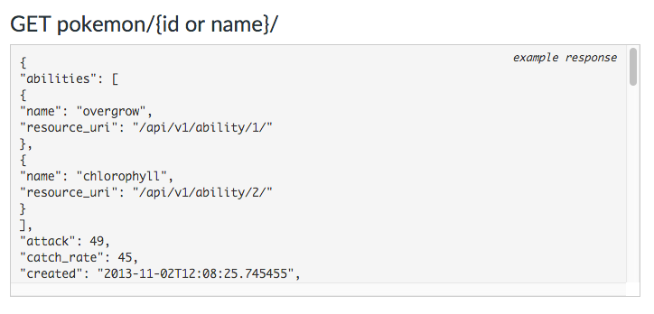

Pokeapi does not use a sign up process like many API services. Intead the API uses a limit per IP address model to keep the load on their servers light. There is a limit of 300 requests per resource per IP address per day. Resource being any accessable data through the API. One example being a single Pokemon can only be queried 300 times a day by a single IP address.
Now we could get arround this by some nafarius methods of masking IP addresses, proxies through the south pacific etc, but for this tutorial we will accept that we will only be able to make 300 calls per IP per day.
The first thing you will notice when you get to the API is the "V1" and "V2" tabs on the page. They are everywhere and kinda hard to miss. There is zero documentation on what the actual differences are, but from what I have researched the main differences is the amount of data available in V2 expands much more into the Mini-Games and extrenusious details of the Pokemon universe than V1 does. For example V2 gets into the Habitats of Pokemon as part of the reutrned JSON.
Separating it out as a separate version makes sense as you can see from the differences in this one response, the data is so different it may cause a bug if introduced into applications already using the API. As you can see, the data is returned in JSON objects with Pokemon data. In the next section we will be calling to the API and getting one of these responses to use.

As V2 is still in Beta, this tutorial will be focusing on V1, but I encourage you to play around with V2 data if you want more than just basic Pokemon information in your application.